New designs for approval
These are drafts (round 3: only the 7 you asked to adjust; the other 12 approved designs are already live). The Kimurodex still shows the old art. Approve, ask for changes, or keep the old one, then press Export my decisions and paste the text to Claude. (Not in the menu and hidden from search engines, but anyone with the address can open it.)
Woolusk / Mammoxen / Primammoth
שלב 3 טבעי יותר: ממותה ענקית עם לוחות אבן וחטים, בלי דגל


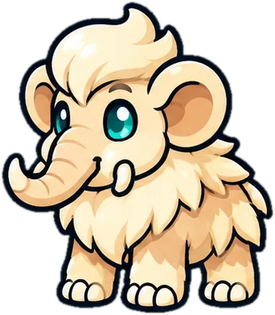

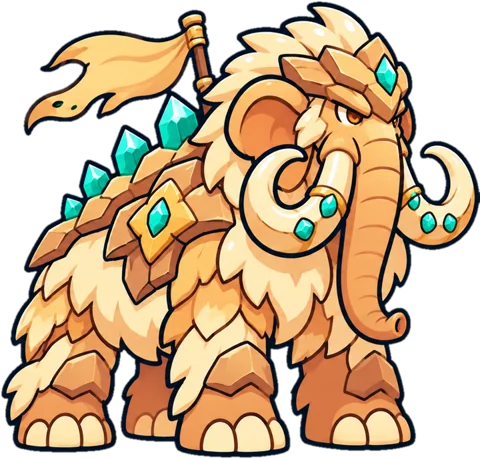
Tusknub / Bristusk / Terrausk
שלב 3: חזיר בר כבד עם לוחות אבן חול, בלי דגל ובד


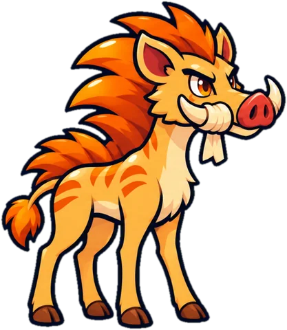
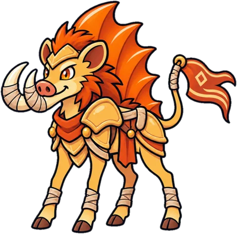
Terrunk / Terravant / Terramalith
שלב 3: פיל ענק רגיל עם רכס גבישים על הגב, בלי אוזני גביש


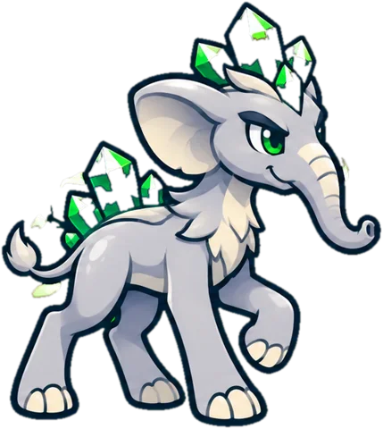

Magmling / Magmhorn / Infernaceros
שלב 3: בלי הר געש על הגב, רק קרן זוהרת וסדקי לבה


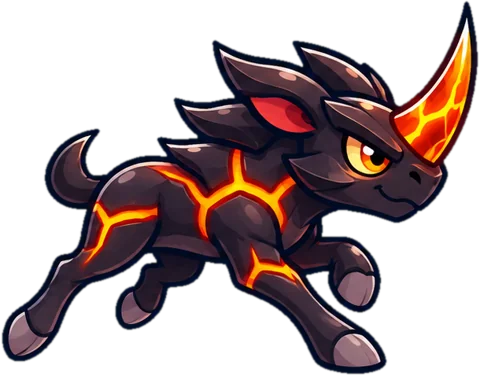
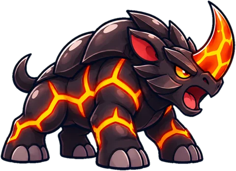
Frostblob / Glacierm / Crystallord
שלב 3: דמות קרח עומדת על שתי רגליים עם כתר וגלימה


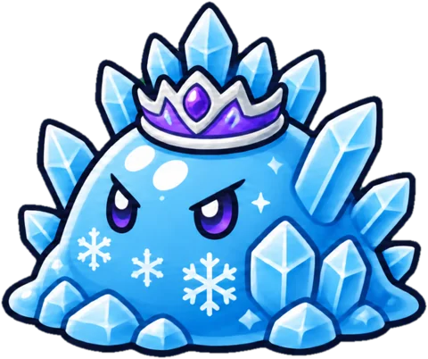
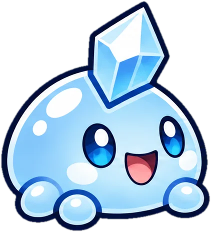
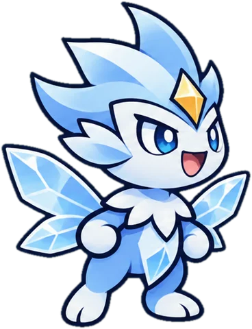
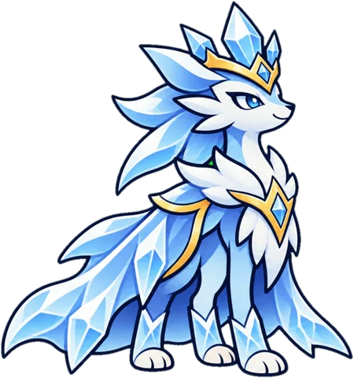
Pebblump / Boulderant / Titanusk
עיצוב חדש לכל הקו: פנגולין מיסטי עם סימני חול זוהרים בטורקיז

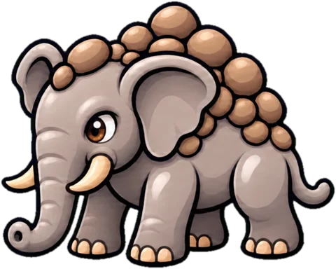
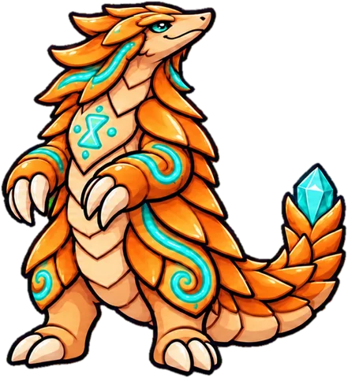

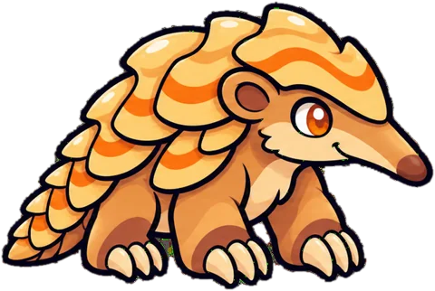

Snoutlet / Tuskhog / Ironboar
עיצוב חדש: יצור מתכת חי עם חיבורי אנרגיה כחולים, לא חזיר בחליפת שריון


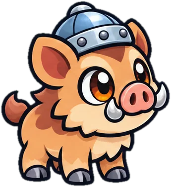
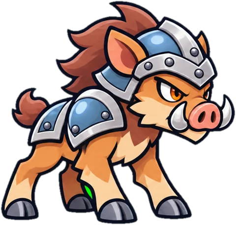
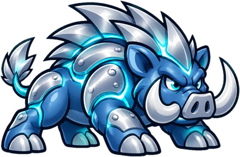